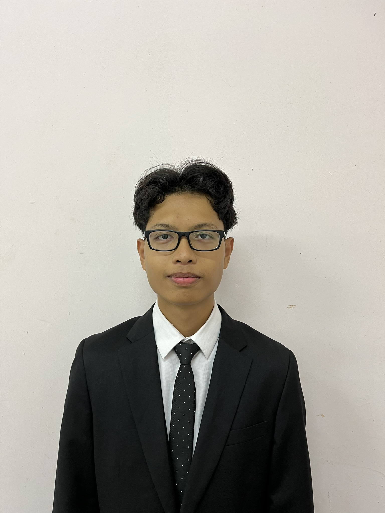
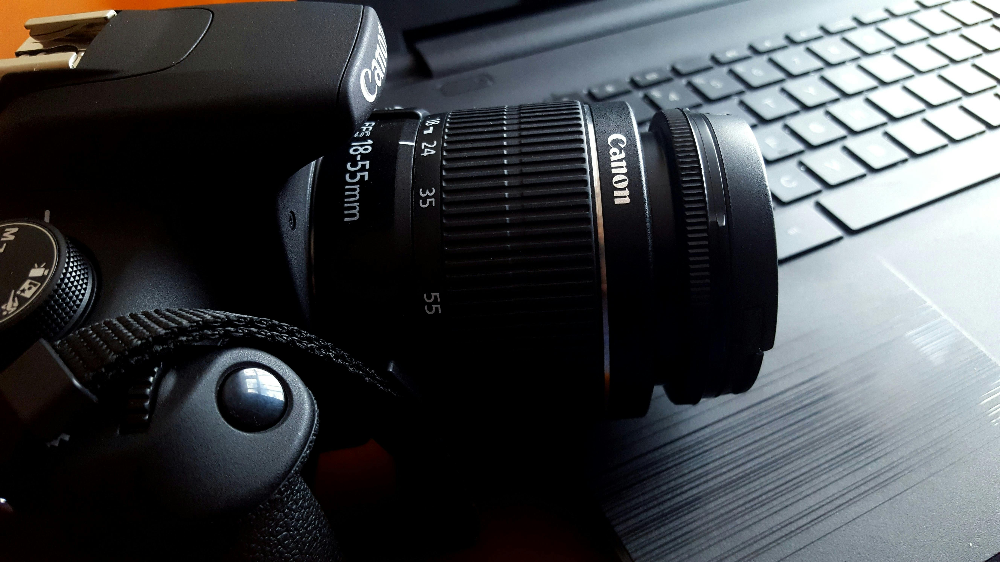

About This Website
This site showcases my professional background, education, and personal achievements. I hope it gives you a clear picture of who I am and what I can offer.

I am a passionate and motivated student currently pursuing my studies in Information System Management at the Faculty of Information Science, Universiti Teknologi Mara (UiTM). I have a strong interest in web design, digital technology, and innovative systems that improve everyday life.
Through this website, I aim to showcase my academic background, achievements, and personal projects. I believe in continuous learning and always strive to enhance my skills in both technical and creative fields. Whether it’s working on a class project or collaborating in co-curricular activities, I always bring dedication, curiosity, and a positive attitude.
My Skills & Goals
| Skill |
Proficiency |
Goals |
| HTML5 |
Advanced |
Graduate with excellent academic results |
| CSS3 |
Intermediate |
Secure an internship in the IT industry |
| JavaScript |
Beginner |
Develop a professional portfolio |
| PHP |
Beginner |
Master modern web development tools |
My Interests
I enjoy photography, learning something new, and research about technology. I also love exploring new gadgets and analyzing how digital innovations affect modern lifestyles. Visit my Portfolio to see some of my work.

Back to Top